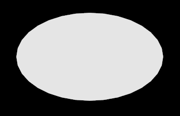
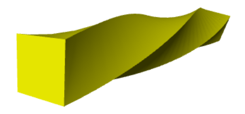
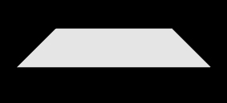

Shapes and Paths¶
Shapes vs. Paths¶
Each function in the shapes library creates a list of 2D coordinates in the xy plane, of form
[ [x0,y0], [x1,y1], [x2,y2], ... ]
Each function in the paths library creates a list of 3d vectors in the xz plane, of form
[ vec(x0,y0,z0), vec(x1,y1,z1), ... ]
The output of shapes.rectangle() and paths.rectangle() is therefore different. However, except for the library name, the syntax of the commands is almost the same. The following descriptions are written for shapes, but can be used to make paths instead simply by changing “shapes” to “paths”. Differences between shapes and paths are noted as needed.
rectangle¶
- rt = shapes.rectangle(width=10, height=6)
- Parameters:
width (scalar) – Width of rectangle. Default 1.
height (scalar) – Height of rectangle. Default 1.
The function above creates a list of 2D x-y coordinates of the corners of a rectangle of width 10 and height 6. If the height value is omitted the shape is a square with its sides equal to the given width. If you print the value of the list created above you will see this list of 2D coordinates, starting at the lower right and continuing counterclockwise, end at the starting location:
[[5, -3], [5, 3], [-5, 3], [-5, -3], [5, -3]]
The rectangle shape can be visualized in VPython by executing the following statement, which extrudes the rectangular shape into the screen, along the line from vec(0,0,0) to vec(0,0,-0.1):
rectshape = shapes.rectangle(width=10, height=6)
linepath = [ vec(0,0,0), vec(0,0,-0.1) ]
extrusion( shape=rectshape, path=linepath )

Other Parameters of Rectangle:
- rt = shapes.rectangle(rotate=pi/6, roundness=0.1, invert=True, scale=2, pos=[2,1] )
- Parameters:
rotate (scalar) – Rectangle is rotated by the specified angle (in radians) counterclockwise around the path. Default 0.
roundness (scalar) – Replaces sharp corners with a circular arc of radius (roundness*min(height,width)).
invert (boolean) – Setting invert to True plus setting roundness produces chamfered corners.
scale (scalar) – Multiplies height and width by scale. Default 1.
xscale (scalar) – Scale factor for width only.
yscale (scalar) – Scale factor for height only.
thickness (scalar) – Shape only. Creates a hollow rectangular frame–a rectangle with a rectangular hole in the middle–whose sides have a thickness of (thickness*min(height,width)). Extruding this will make a hollow box. Default 0 (no hole). If thickness>0, the shape will consist of two lists of 2D points: one for the inner contour and one for the outer contour.
pos (list) – Shape only. 2D position relative to the path. Default: center of rectangle placed at location of path.


Images left to right: rotated rectangle, rounded rectangle, chamfered rectangle, rectangular frame.
circle¶

- cr = shapes.circle(radius=2, np=128)
- Parameters:
radius (scalar) – The radius of the circle. Default 1.
np (scalar) – Number of points used to approximate circle. Default 64. An incomplete circle will not have the full number of points.
scale (scalar) – Multiplies height and width by scale. Default 1.
xscale (scalar) – Scale factor for width only.
yscale (scalar) – Scale factor for height only.
angle1 (scalar) – Starting angle in radians, ccw from +x axis. By default 0.
angle2 (scalar) – Ending angle in radians, ccw from +x axis. By default 2*pi.
thickness (scalar) – Shape only. Creates a circular ring of width (thickness*radius). Extruding this will make a hollow cylinder. Default 0 (no hole).
pos (list) – Shape only. 2D position relative to the path. Default: center of circle placed at location of path.


Images left to right: thickness, angle1 and angle1, angle1 and angle2 and thickness
ellipse¶
{kind=link}
- myellipse = shapes.ellipse(width=5, height=3)
- Parameters:
width (scalar) – Dimension along x-axis. Default 2.
height (scalar) – Dimension along y-axis. Default 1.
The attributes of ellipse are almost identical to the attributes of circle, with the exception that xscale and yscale are replaced with width and height. The default width of an ellipse is twice that of a circle.
arc¶

- myarc = shapes.arc(radius=2, angle1=0, angle2=pi/2)
- Parameters:
radius (scalar) – Radius of arc.
The attributes of arc are very similar to those of circle. An arc can be rotated and scaled. For a shape, if no thickness is specified the arc shape is given a very small thickness so that a closed contour is produced.
Note that np is the number of points in a complete circle, not in the arc itself.
An arc shape extruded along an arc path can give a ribbon:
hshape = shapes.arc(angle1=0, angle2=pi/3)
hpath = paths.arc(angle1=pi/2, angle2=pi)
demihemi = extrusion( shape=hshape, path=hpath, color=color.yellow)
line¶
- Lshape = shapes.line(start=(1,0), end=(1,1), np=20)
- Parameters:
start (list) – For shape, 2D coordinate of line start. Default [0,0]. For path, start is a vector.
end (list) – For shape, 2D coordinate of line end. Default [0,1]. For path, end is a vector.
np (scalar) – Number of evenly spaced points in the line.
Creates a straight line from start to end, with a total number of n points, equally spaced over the interval. This can be useful for a path, if you wish to use twist in the extrusion.
{kind=link}
Above: a rectangle extruded along a path with 30 points, with a 0.1 radian twist at each step.
triangle¶

- trishape = shapes.triangle(length=5, roundness=0.2)
- Parameters:
length (scalar) – Length of side of an equilateral triangle.
rotate (scalar) – Rectangle is rotated by the specified angle (in radians) counterclockwise around the path. Default 0.
roundness (scalar) – Replaces sharp corners with a circular arc of radius roundness*length.
invert (boolean) – Setting invert to True plus setting roundness produces chamfered corners.
scale (scalar) – Multiplies height and width by scale. Default 1.
xscale (scalar) – Scale factor for base only.
yscale (scalar) – Scale factor for altitude only.
thickness (scalar) – Shape only. Creates a hollow rectangular frame–a rectangle with a rectangular hole in the middle–whose sides have a thickness of (thickness*length). Extruding this will make a hollow object. Default 0 (no hole). If thickness>0, the shape will consist of two lists of 2D points: one for the inner contour and one for the outer contour.
pos (list) – Shape only. 2D position relative to the path. Default: center of rectangle placed at location of path.

pentagon¶

- pt = shapes.pentagon(length=3)
- Parameters:
length (scalar) – Length of a side.
rotate (scalar) – Star is rotated by the specified angle (in radians) counterclockwise around the path. Default 0.
roundness (scalar) – Replaces sharp corners with a circular arc of radius (roundness*length).
invert (boolean) – Setting invert to True plus setting roundness produces chamfered corners.
scale (scalar) – Multiplies height and width by scale. Default 1.
xscale (scalar) – Scale factor for width only.
yscale (scalar) – Scale factor for height only.
thickness (scalar) – Shape only. Creates a pentagonal frame. Extruding this will make a hollow pentagon. Default 0 (no hole). If thickness>0, the shape will consist of two lists of 2D points: one for the inner contour and one for the outer contour.
pos (list) – Shape only. 2D position relative to the path. Default: center of rectangle placed at location of path.
hexagon¶

- hx = shapes.hexagon(length=5)
The hexagon object has the same attributes as pentagon.
octagon¶

- oc = shapes.octagon(length=5)
The octagon shape has the same attributes as pentagon.
ngon¶

- poly = shapes.ngon(np=7, length=5)
- Parameters:
np (scalar) – The number of sides in the figure.
radius (scalar) – The n-gon will fit into a circle with this radius. Side length is calculated automatically in this case.
Additional parameters are the same as for pentagon.
star¶

- starshape = shapes.star(n=6, radius=3, iradius=1)
- Parameters:
n (scalar) – Number of “beams” in the star. Default: 5
radius (scalar) – Radius of a circle within which the star fits. Changing radius affects only the convex vertices of the star, leaving the inner, concave ones, unchanged.
iradius (scalar) – Inner radius: Radius of a circle going through the inner, convex vertices of the star. Default 0.5*radius.
rotate (scalar) – Rotation around center.
roundness (scalar) – Replaces sharp corners with a circular arc.
invert (boolean) – Setting invert to True plus setting roundness produces chamfered corners.
scale (scalar) – Multiplies height and width by scale. Default 1.
xscale (scalar) – Scale factor for width only.
yscale (scalar) – Scale factor for height only.
thickness (scalar) – Shape only. Creates a star-shaped frame. Extruding this will make a hollow object. Default 0 (no hole). If thickness>0, the shape will consist of two lists of 2D points: one for the inner contour and one for the outer contour.
pos (list) – Shape only. 2D position relative to the path. Default: center of rectangle placed at location of path.
trapezoid¶
{kind=link}
- tr=shapes.trapezoid(pos=[-2,3], width=5, height=1, top=3)
- Parameters:
width (scalar) – Width of base.
height (scalar) – Perpendicular distance from base to top.
top (scalar) – Length of top line. Default is 0.5*width.
For other attributes, refer to pentagon.
cross¶

- st = shapes.cross(width=10, thickness=2)
- Parameters:
width (scalar) – Width of the cross. Default 1.
thickness (scalar) – Thickness of an arm. Default 0.2. Note that this does not create a hollow frame.
rotate (scalar) – Star is rotated by the specified angle (in radians) counterclockwise around the path. Default 0.
scale (scalar) – Multiplies height and width by scale. Default 1.
xscale (scalar) – Scale factor for width only.
yscale (scalar) – Scale factor for height only.
pos (list) – Shape only. 2D position relative to the path. Default: center of rectangle placed at location of path.
paths.cross() produces a path, but the thickness attribute does not give predictable results for thickness >= 1.
points¶
This function works for shapes only. If you want to specify your own path, just use the list of points as the parameter in the extrusion.
- ptshape = shapes.points(pos=[ [1,0], [1,1], [-2,3], [1,0] ], rotate=pi/4)
- Parameters:
pos (list) – A list of points defining the perimeter of a polygon. Last point must be the same as first point.
scale (scalar) – Multiplies height and width by scale. Default 1.
rotate (scalar) – Rotation around center.
roundness (scalar) – Replaces sharp corners with a circular arc.
Note that pos is not an offset to the path, as it is in other shapes.
gear¶

Gears are used to transmit motion by changing the rotational speed and direction with associated torque. For a detailed description of gears and gear terminology please refer to https://en.wikipedia.org/wiki/Gear. Be sure to click to enlarge the diagram that explains gear nomenclature. It mentions “involute gears” which are discussed at https://en.wikipedia.org/wiki/Involute_gear. The default gear shape is a “spur” gear.
Gear parameters define the way the gear behaves. These parameters must be in a harmony among each other to obtain a well defined gear. Not all parameters are provided in this program to fully control the gear structure. Some of them are calculated by using the others, hence may result in an inconsistent gear structure. Many gear parameters are derived from the radius. The user is responsible to provide a consistent set of parameters.
- g = shapes.gear()
- Parameters:
radius (scalar) – Extends from center of gear to a point midway between the base and outer edge of a tooth. Placing the centers of two gears two radii apart usually allows gears to mesh properly. Default 1.
scale (scalar) – Applies a uniform scale to the gear.
pos (list) – Shape only. 2D position relative to the path. Default: center of rectangle placed at location of path.
n (integer) – Defines number of teeth in the gear. Normally, “tooth size” and the number of teeth should define the gear circumference (or the radius), but in this program the “tooth size” is not a control parameter, rather it is calculated from the number of teeth and the radius. Hence the number of teeth, n, can be set arbitrarily and some unrealistic values for the “tooth size” can be obtained in turn. The user should be setting the parameters appropriately to obtain a reasonable tooth structure. The default number of teeth is 20.
phi (scalar) – Coupled gears exert force on each other on the tooth profile during rotation. Phi is called the Pressure Angle, which is one of the basic parameters defining the tooth profile for a better contact. Also, “tooth size” components like bottom-land (roughly the gap between two teeth at the bottom of the teeth) and top-land (tooth thickness at the very top) are calculated using the pressure angle. Default value for the pressure angle is 20 degrees.
addendum (scalar) – The “tooth depth” is defined as the sum of addendum and dedendum. Addendum is the part of the tooth above the radius to the tip of the tooth. Default value for addendum is 0.08 times the radius.
dedendum (scalar) – Dedendum is the part of the tooth below the pitch radius to the depth of the tooth. Default value for dedendum is 0.1 times the radius.
fradius – Bottom filet radius, fradius defines the radius of curvature at the bottom of the tooth between the bottom-land and the tooth. Default value for fradius is 0.02 times the radius.
rotate (scalar) – Gear is rotated by the specified angle (in radians) counterclockwise around the path. Default 0.
res (scalar) – This parameter defines the drawing mesh resolution and does not affect the gear structure. Since most of the mesh points are on a circle, or on a curve defining the tooth profile, res is used to control curvature resolution at varying scales for different parts of the mesh. The default value for res is 1.0, and a better resolution is obtained as res is increased.
Inward-pointed gear teeth¶
You can make a gear with inward-pointing teeth by combining a circular outer shape with an innner gear shape:
outer = shapes.circle(radius=1) # a disk
inner = shapes.gear(radius=0.8) # a gear-shaped hole in the disk
extrusion(path=[vec(0,0,0), vec(0,0,0.2)], shape=[outer, inner])